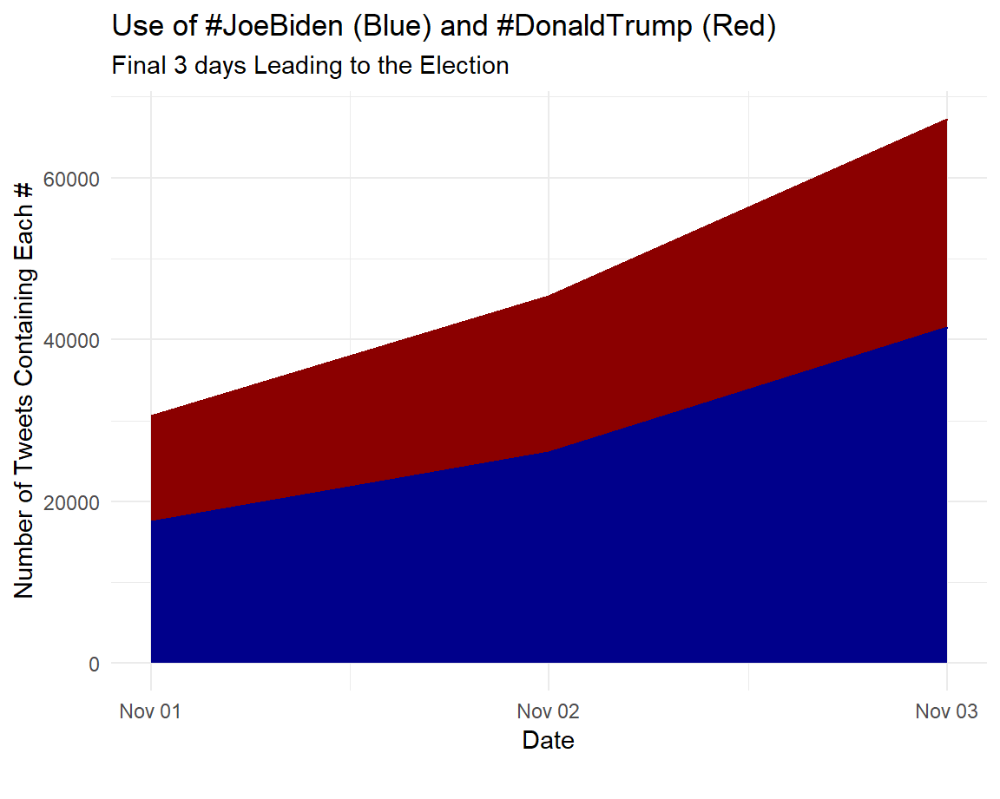
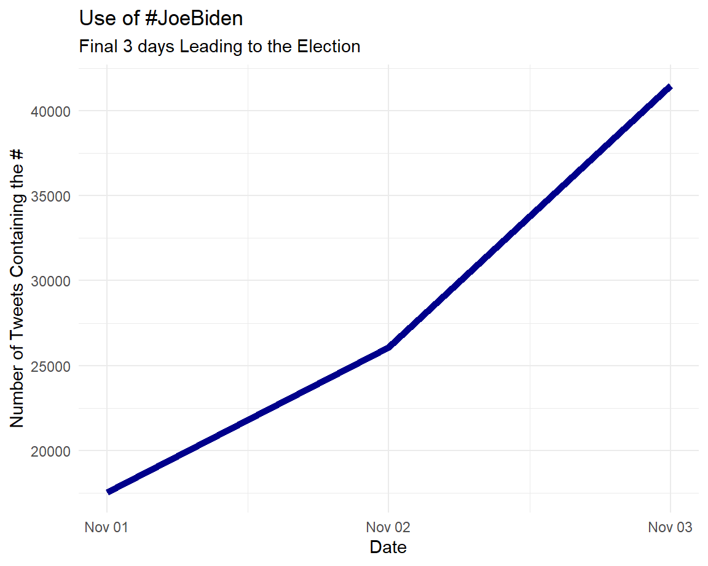
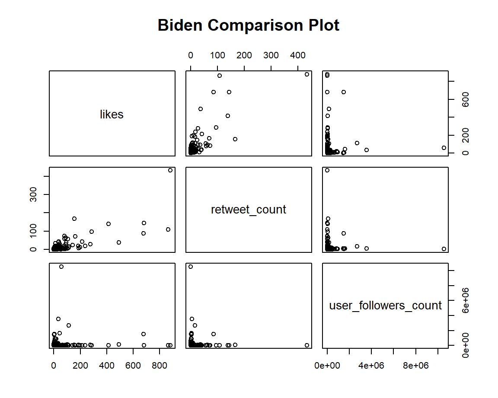
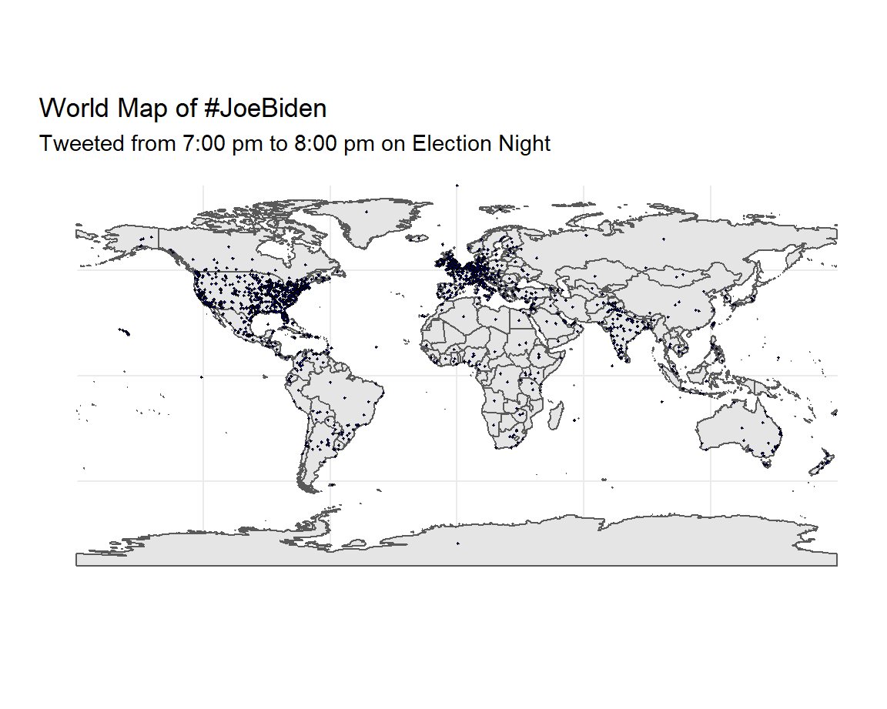
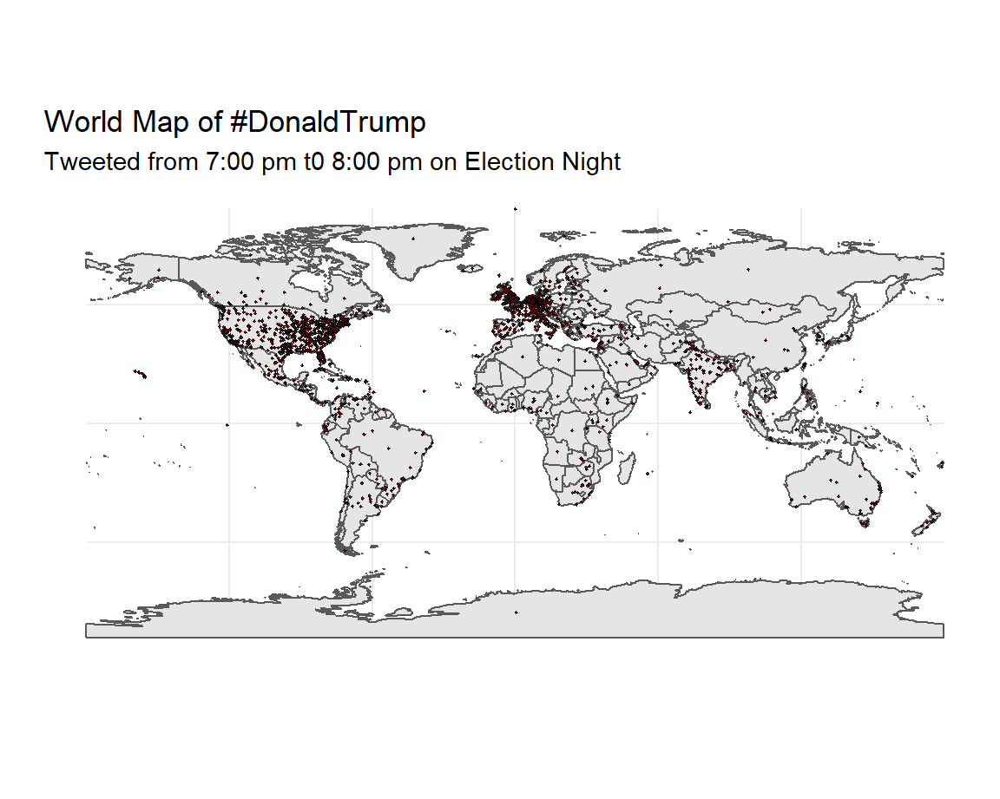
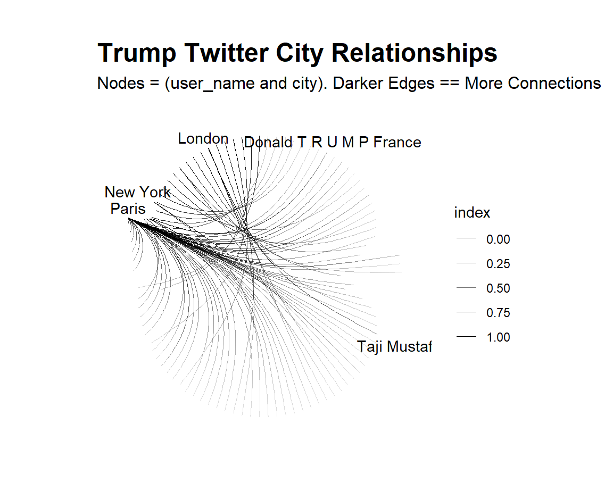
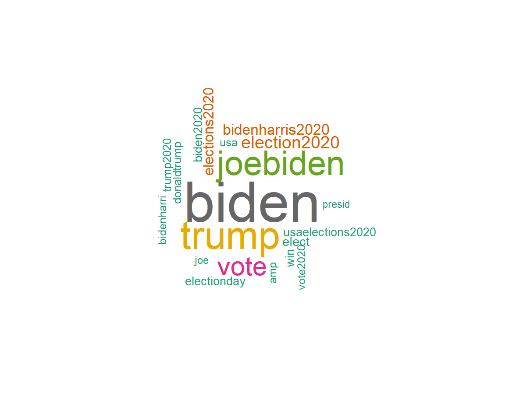
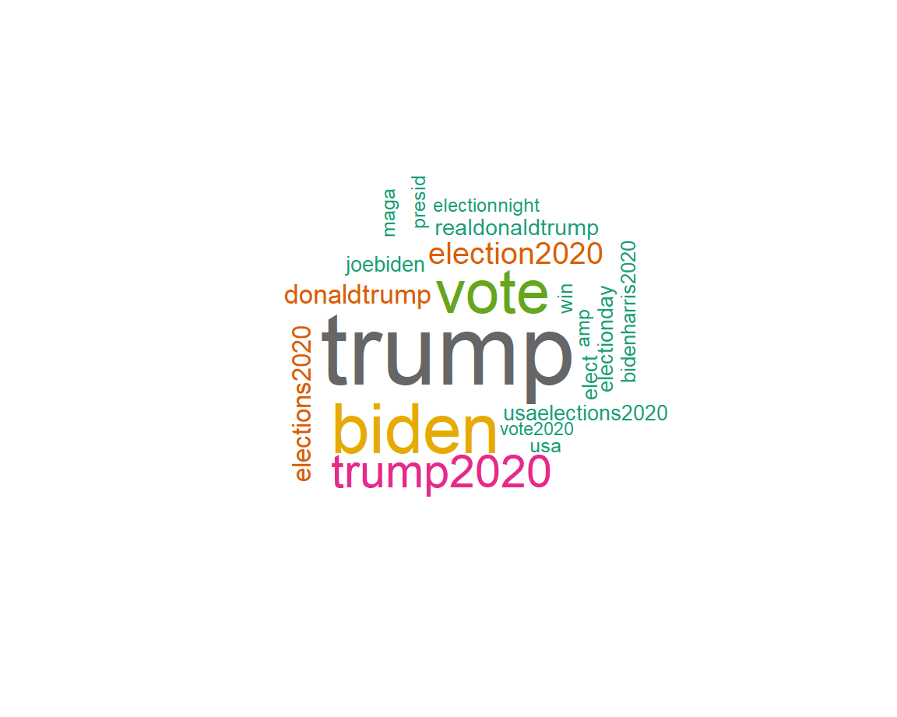

Douglas Neumann Visualizations
A key battleground for the 2020 Preseidential election was fought on Twitter. While the standard routine of giving stump speeches, shaking hands, and kissing babies was severely restricted due to the outbreak of the COVID-19 Pandemic, messaging on social media became even more important.Twitter became a key battleground for that messaging. The data came from tweets containing the use of #JoeBiden and #DonaldTrump. The following visualizations show the story of the 2020 election as it was fought in the trenches of twitter.
Column
The Data
The data for this analysis comes from twitter and via kaggle. It was initally was over a 25 day period starting in the middle of October and going a few days past the elections. Due to the sheer magnitude of the data it was redcuced in scope to make processing possible.
## X created_at tweet_id
## 2 267676 2020-11-01 00:00:03 1.3226898268151726e+18
## 3 267677 2020-11-01 00:00:17 1.322689883538862e+18
## 4 267678 2020-11-01 00:00:18 1.3226898889412037e+18
## 9 267683 2020-11-01 00:00:36 1.3226899651097928e+18
## 14 267688 2020-11-01 00:00:51 1.322690028838015e+18
## tweet
## 2 @realDonaldTrump We are â\200œOne Nation under a Grooveâ\200\235 (no all caps becuz that would violate P Funk copyright) #JoeBiden
## 3 Can't believe #joebiden is that stupid to deny things that can be proven by video! "Never called black Americans #predators", huh?? #LyingBiden #lyingjoebiden #POC #latinos #virginia #northcarolina #newhampshire #iowa #maine #delaware #pennsylvania #utah\n https://t.co/4efVEeCL9F
## 4 Estados Unidos decide, #Trump o #Biden, vea todo el análisis de las elecciones solo por #NocheDeElección, este martes 3 de noviembre a partir de las 7 PM a través de @TENtvCanal10. https://t.co/dMWQHRi6mu
## 9 This is where #JoeBiden is going to spend your #tax money. Now do you know why he has to be stopped? \n#CNN #Pennsylvania #PennState #OhioState #terrorism #BlacksForTrump #JewsForTrump #jewsagainsttrump #FoxNews https://t.co/0YYjqS5TMO
## 14 Is that, like, every single resident of Butler? ðŸ\230\201👌ðŸ\217» \n\n#PA #Pennsylvania #Biden👎ðŸ\217» #Pennsylvania2020 #PAForTrump https://t.co/NcNR5iETdi
## likes retweet_count source user_id
## 2 0.0 0 Twitter for iPhone 635616311.0
## 3 0.0 0 Twitter Web App 4498209202.0
## 4 1.0 0 Buffer 2228854808.0
## 9 2.0 1 Twitter for iPhone 40532427.0
## 14 12.0 10 Twitter for iPhone 190878483.0
## user_name user_screen_name
## 2 Miiiister Anderson JefreyJAnderson
## 3 On Side of GOD + TRUMP miksu2006
## 4 TEN Canal 10 tencanal10
## 9 Pirate PIRATE1775
## 14 Chris11962â\220ï¸\217🇺🇸â\220ï¸\217 Chris11962
## user_description
## 2 Professor @ BMW Center for German and European Studies, Georgetown University; Europe & transatlantic relations; Arsenal & motorcycles; dogs & cats
## 3 â\235¤ï¸\217GOD, my HUSBAND, my ANIMALS..& @POTUS! #KAG #TRUMP2020.. DOGS R4 LOVING, NOT EATING #dogmeattrade.. IF DOGS COULD TWEET I'D HAVE SO MANY MORE FOLLOWERS! 🥰
## 4 Televisión Educativa Nacional - Canal 10 https://t.co/igzgzfvYS0
## 9 Avid sports fan and political junkie. Catholic. Independent. Blocked by JulieMason,Donna Brazille. Joy Ann Reid Chris Hayes Ezra Klein
## 14 Catholic Deplorable ReTrumplican. Political junkie. On Parler. IFB #Trump patriots 💯%! Lists, trolls & flirts = blocked. ALL LIVES MATTER! #Trump2020 #KAG🇺🇸
## user_join_date user_followers_count user_location lat
## 2 2012-07-14 19:56:31 417.0 Bethesda, MD 38.98198
## 3 2015-12-16 02:07:53 6389.0 United States 39.78373
## 4 2013-12-03 21:06:35 38056.0 Honduras 15.25724
## 9 2009-05-16 20:08:45 11081.0 Pittsburgh 40.44169
## 14 2010-09-15 01:56:26 56077.0 NYC 40.71273
## long city country continent
## 2 -77.12423 Bethesda United States of America North America
## 3 -100.44588 United States North America
## 4 -86.07551 Honduras North America
## 9 -79.99009 Pittsburgh United States of America North America
## 14 -74.00602 New York United States of America North America
## state state_code collected_at
## 2 Maryland MD 2020-11-02 16:56:58.429592
## 3 2020-11-02 16:56:58.632904
## 4 2020-11-02 16:19:42.688350
## 9 Pennsylvania PA 2020-11-02 16:56:58.334347
## 14 New York NY 2020-11-02 16:19:42.681391Time Series - Comparison

This is the time series explanation
Time Series - Biden

Time Series - Trump
Exploratory - Biden

Exploratory - Trump
Geographical - Biden

Geographical - Trump

Network - Biden
Network - Trump

Text - Wordcloud Biden

Text - Wordcloud Trump

Text - Bar Grapah Biden